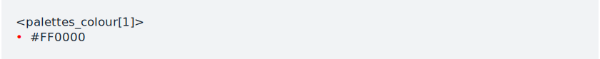
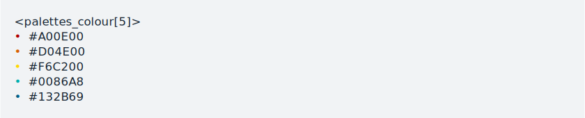
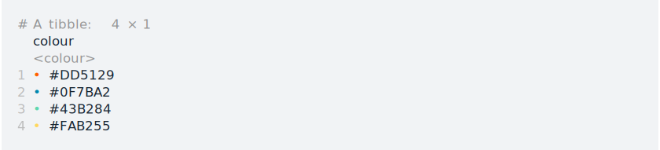

palettes is an R package for working with colour palettes. The goal of palettes is to provide methods for working with colour palettes, particularly for developers who want to make their own colour palette package. It is in very early development.
Installation
Install the development version from GitHub with:
# install.packages("remotes")
remotes::install_github("mccarthy-m-g/palettes")Usage
Colours can be specified by name (as listed by grDevices::colours()):
pal_colour("red")
Or by hex code:
pal_colour("#FF0000")
Multiple colours can be specified at once as a character vector:
pal_colour(c("#FF0000", "blue", "green"))
Named colour palettes can be specified in the same way:
pal_palette(
palette_1 = c("#FF0000", "blue", "green"),
palette_2 = c(c("yellow", "orange", "purple"))
)
Colours also work in tibbles:
tibble(
colours = pal_colour(c("#FF0000", "blue", "green"))
)
Documentation
See at https://mccarthy-m-g.github.io/palettes/ and also in the installed package: help(package = "palettes").